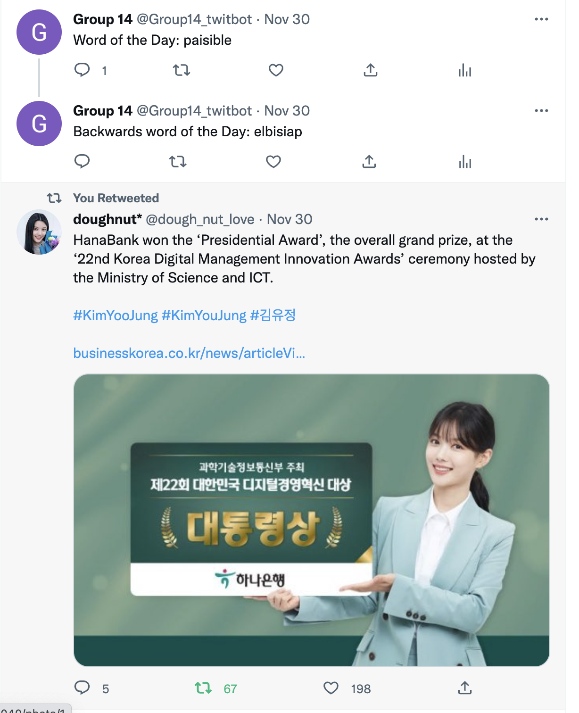

Projects
This first project was created using A-frame. My group and I decided to create a moonlight scene with pink trees and a blue background to represent the sea.
The next project was creating a twitterbot. My group and I created a twitterbot that creates a "word of the day" tweet and replies to that tweet by reversing the string. We also made a function that retweets the most recent tweets with the keyword "innovation" in it.
This last project here is a visual novel game my group and I created. We used only html, js, and json files to create the game. The visuals and story in the game were created by our team. The game is a murder mystery kind where the player plays the role of a detective to find the murderer of their brother.